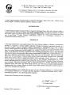
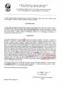

VIGYÁZAT, JOBBIK-BÁNTÁS! HITVAKOK
TÁVOLODJANAK!Az itt olvasható határozatot, amelyet a Jobbik Etikai és Fegyelmi
Bizottsága adott ki, egyszerre kaptam meg Masszi Pétertől és Rétháti Györgytől. Mindketten arra
kértek, tegyem közzé, amit én magam is helyesnek vélek. Természetesen annak az ügynek a végére
került pont - legalábbis egyelőre - amelyről nyáron
Szcientológus a
Jobbikban? címmel riportfilmet forgatott a Bombagyár TV.
A párt fegyelmi bizottsága
Masszi Pétert az ellene felhozott vádpontokban vétlennek találta. Felfüggesztett párttagságát
helyreállították, egyszersmind pedig az V. kerületi pártszervezet elnöki posztjára is
visszahelyezik. Mégsem oszlatják fel az általa létrehozott szervezetet, és nem alakítanak újat sem.
A határozat ellen fellebbezésnek van helye, amivel, gyanítom, Rétháti György élni is
fog.
Személyes véleményem eddig csak zárt körben fejtettem ki erről a történetről, mert
reméltem, hogy fiatal nézőinknek maguktól is leesik, mit kell észrevenni az egyébként maximálisan
pártatlan hangnemben elkészült filmriportban. Sajnos nagyon kevesen voltak, akik velem azonos
következtetésre jutottak. Nem azért, mert magam vagyok a megtestesült tisztánlátás - az ilyen
képességekkel rendelkezők már rég a Jobbikban viselnek tisztséget vagy amatőr hírportálokat
szerkesztenek - hanem mert egy politológiában amatőr szinten is járatos embernek is percek alatt le
kellett volna, hogy essen, hogy mi történik a színfalak mögött. Mint a Jobbik bizottsága helyesen
megállapította, az egész Masszi-ügyet Rogán Antal robbantotta ki, eszközként felhasználva a Magyar
Nemzetet, a sértődött Réthátit, Masszi régi haragosát, és a színleg MIÉP-es, de valójában fideszes,
a kerületi önkormányzatban fideszes képviselőként tevékenykedő, gátlástalan Tóth Lajost. Nem volt
véletlen, hogy riportunk forgatása során Tóth úr nem kívánt kameránk elé állni, csak kamerán kívül
mondta el a Masszi-ügy történetét saját szemszögéből. Tulajdonképpen ezzel indult a sztori, vele
találkoztunk először, mert tőle származott a füles. Valószínűleg bennünket is fel akartak használni,
azt hitték, majd egy jó kellemetlen és elfogult riportot csinálunk, ami megfelel a céljaiknak. A cél
ugyanis a Jobbik ellehetetlenítése volt az V. kerületben, lejáratása saját választói körében, hogy a
következő választáson ne veszélyeztethesse a fideszes "önkényuralom" működését.
Nem lehet
azonban nem észrevenni azt a szerencsétlenkedést, amivel a Jobbik a konspirált támadásra reagált.
Azonnal hitelt adtak a rágalmaknak, és nyílt eljárást indítottak saját emberük ellen, akit pedig tíz
körömmel kellett volna védeniük, és mindent a színfalak mögött intézni, nem feltétlenül a
párttörvényben megszabott keretek között. Ilyenkor jönne jól a Jobbiknak, ha lenne saját baráti
sajtója, megfelelő oknyomozó riporterekkel, aminek kialakítására egyébként minden lehetőségük
megvolt az elmúlt egy-két évben, de bőven megfelelt nekik az, ami most is van. Bebizonyosodott, hogy
a Jobbik mennyire védtelen a rafinált támadások ellen, hogy nincs valódi belső elhárítása.
Gyanakvásuk, az persze van. Vona Gábor egyes levélváltásaiból kiderült, hogy egyszerűen nem tudnak
mit kezdeni azzal, hogy mi riportot készítettünk az V. kerületi helyzetről, és azt kezdte
találgatni, hogy vajon kinek a megbízásából tevékenykedünk. Mintha a világ ügynökök és
titkosszolgálatok harcából állna. Az persze sosem jutott eszébe Vona Gábornak - még azelőtt sem,
hogy kvázi-baráti sajtójuk árulónak kiáltott ki bennünket - hogy megpróbáljon bennünket a Jobbikhoz
közelíteni, ha már egy oldalon állunk, és nem tartozunk senkihez. Elhatárolódni, azt persze tudott
tőlünk, amit sosem tett meg például Rogán Antallal, akivel pedig 2006-ban együttműködési
nyilatkozatot írt alá, akkor még mint a Jobbik alelnöke.
Az amatőrködés végére ugyan pontot
tett ez az irat, de ez már eső után köpönyeg. Az ellenség olyan fontos információkat szerzett meg a
pártról, mint például felkészültségük, éberségük foka, reakcióidejük, médiaképességük, választóikkal
való belső kommunikációjuk színvonala. A Fidesz gyakorlatilag meghackelte a Jobbikot. Masszi
Péternek nehéz dolga lesz a következő kerületi választáson, hiszen nem csak hogy igazi harapós
patkányokkal kell majd megküzdenie Rogán és kampánycsapata személyében, ráadásul ezek a
patkányok keresztül-kasul fúrták a kerületi Jobbik építményét járatokkal, az országos
Jobbik-vezetőségről nem is beszélve.
Ilyen és ehhez hasonló dolgok miatt tartom fenn ma is
azt a véleményem, hogy a Jobbik, lehet akármilyen népszerű, nem lesz képes valódi erőt felmutatni,
valódi hatalmat gyakorolni. Igen, lehet, hogy a Parlamentbe be fog jutni, mert beszavazzák, de a vox
populi a hatalom leglényegtelenebb eleme a mai democsokráciában, a Jobbik mögött pedig nem áll
semmilyen valódi erő. A párt az egész eddigi évet elvesztegette, semmilyen érdemi társadalmi,
gazdasági vagy más kapcsolatot nem épített ki. Egyedül a TMRSZ-szel kötött paktum értékelhető, bár
ez a szövetség is csak az EP-választás kedvéért született, és azóta egyetlen szó sincs róla.
Született persze egy látványos összeborulás a HVIM-mel és a félelmetes Betyársereggel, amitől a
Népszabadság egyes olvasói nagyon megijedtek.
Morvai Krisztina pedig szépeket mond az EP-ben,
és tagja a fontosnak tűnő Mezőgazdasági és Vidékfejlesztési Bizottságnak, amely azonban eleddig az
egész esztendőben kétszer ült össze, és ebből egy ülésének egyetlen tárgya a működési rend ismertetése volt a képviselőkkel. (A
bizottság üléseinek anyagait
itt
lehet elérni magyarul is, Morvai Krisztina képviselői adatlapja pedig
itt
található.) Póttagja továbbá az Állampolgári jogok, bel- és igazságügy fedőnevű gittegyletnek,
amely minőségében júliusban volt lehetősége pár percben valóban kitűnő angolsággal és igaz magyar
becsülettel, de nem túl sok eredménnyel elmondani, hogy kifogásolja, hogy ez a bizottság nem
foglalkozik a 2006 őszi magyarországi rendőrterrorral, bezzeg Iránnal. Mindezidáig ez volt Morvai
Krisztina egyetlen bármiféle felszólalása az EP-ben. (A felszólalások listája
itt
található, ha valaki nem találta volna meg az adatlapján.) Persze ne legyünk igazságtalanok,
egyelőre más magyar képviselőknek sincs több eredményük, sőt, a többségük fel sem szólalt sehol. De
el lehet képzelni, hogy olyan bizottságok, amelyek évente egyszer-kétszer ülnek össze, milyen
befolyással bírnak bármire is egy végrehajtó hatalom és törvénykezési jog nélkül működő
parlamentben.
Hogy teljes legyen azok felháborodása, akik a Jobbikban mindenáron igazi rendszerváltó
erőt, netán személyesen a Magyarok Szuper Istenét kívánják látni, itt megtekinthető a fenti
határozat a helyesírási hibák megjelölésével. Szégyen, hogy egy állítólag kívül-belül színmagyar, a
nemzeti érdeket egyedül képviselő párt vezetői ilyen durva hibákat vétsenek egy hivatalos
dokumentumban. Legalább a helyesírás-ellenőrzőt kapcsolnák be.